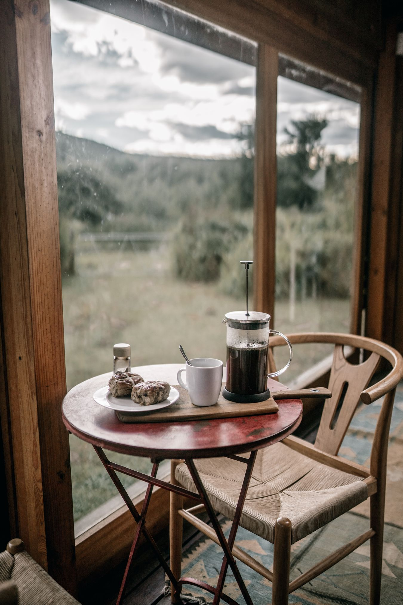

Hillsburgh, Ontario
Something warm.
Something sweet.
Breakfast, lunch, and from-scratch baking at a neighbourhood café on Trafalgar Road.

Food for home and gatherings
Bring something good to the table.
Weekly Food Box
Look for the café’s weekly Food Box updates on Facebook.
Catering
Reach out to the café to ask about food for your next gathering.
Come by
See you in Hillsburgh.
Jess For You Café & Baked Goods
109 Trafalgar Road North
Hillsburgh, Ontario
109 Trafalgar Road North
Hillsburgh, Ontario
Check Facebook for the café’s latest hours and updates before heading out.